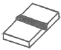
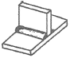
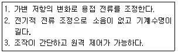
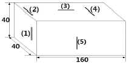

자기비파괴검사산업기사 (2016-08-21 기출문제)
1과목: 비파괴검사 개론
1. 다음 중 비파괴 검사법에 대한 설명으로 틀린 것은?
- 내부 결함의 검출에 적당한 방법은 방사선 투과시험과 초음파탐상시험이다.
- 초음파탐상시험에서는 초음파의 진행방향에 평행한 방향의 결함을 검출하기 쉽다.
- 표층부 결함의 검출에는 자분탐상시험과 와전류탐상시험이 적당하다.
- 용접부의 기공을 검출하기에 가장 좋은 시험법은 방사선투과시험이다.
(정답률: 74%)

2. 극간법으로 자분탐상할 때의 내용으로 틀린 것은?
- 모든 방향의 결함을 검출하기 위해서는 90도 방향으로 바꾸어 2회이상 탐상한다.
- 자력선은 폐곡선이므로 자극간의 간격에 관계없이 자계의 분포는 일정하다.
- 철심의 단면적이 클수록 휴대하기가 불편하다.
- 자석의 자화능력은 철심의 재료와 전류의 크기에 따라 달라진다.
(정답률: 15%)
3. 결함검출을 위한 비파괴검사에 대해 기술한 것으로 옳은 것은?
- 초음파탐상검사는 내부결함의 종류나 형상의 판별 성능이 우수하지만 라미네이션이나 경사가 있는 균열의 검출은 곤란하다.
- 와전류탐상검사는 표면과 표면직하의 결함을 검출할 수 있으며 강자성체에만 적용할 수 있다.
- 침투탐상검사는 표면의 개구결함에만 적용가능하고 비금속 재료에도 적용할 수 있다.
- 자분탐상검사는 시험체의 탐상이 비접촉인 동시에 고속으로 하기 때문에 봉의 자동탐상에 적용 가능하다.
(정답률: 80%)
4. 시험체와 시험체 주위의 압력차를 이용하여 수행하는 비파괴검사법은?
- 누설검사
- X선 회절법
- 중성자투과검사
- 와전류탐상검사
(정답률: 18%)
5. 보수검사에서 볼 수 있는 결함이 아닌 것은?
- 피로 균열
- 응력부식 균열
- 캐비테이션 부식
- 라멜라티어(테어)
(정답률: 74%)
6. 순철에 대한 설명 중 틀린 것은?(오류 신고가 접수된 문제입니다. 반드시 정답과 해설을 확인하시기 바랍니다.)
- α-철은 BBC의 원자배열을 가지며, 910℃ 이하에서 안정하다.
- γ-철은 FCC의 원자배열을 가지며, 910~1400℃에서 안정하다.
- δ-철은 BCC의 원자배열을 가지며, 1400~1539℃에서 안정하다.
- γ-철에서 δ-철로 변화할 때 급격히 수축하며, 4개의 동소 변태가 있다.
(정답률: 74%)
7. Fe-C 평형상태도에서 나타나지 않는 반응은?
- 포정반응
- 공정반응
- 편정반응
- 공석반응
(정답률: 70%)
8. 냉간가공 후의 성질변화에 대한 설명으로 틀린 것은?
- 가공하면 경화한다.
- 가공하면 밀도가 감소한다.
- 가공하면 항복강도가 감소한다.
- 가공에 의하여 전기저항은 증가한다.
(정답률: 15%)
9. 배위수가 12, 충진율이 74%, FCC구조를 이루고 있는 금속원소는?
- Cd
- Ba
- Ag
- Co
(정답률: 69%)
10. 구상흑연주철에 대한 설명으로 틀린 것은?
- 용해로 중의 용해과정에서 탈황된다.
- 불스 아이(bull's eye) 조직을 갖는다.
- 흑연구상화제로 Mg을 많이 사용한다.
- 구상화 처리 후 용융상태로 방치하면 흑연 구상화 효과가 상승된다.
(정답률: 41%)
11. 다음 중 실루민(silumin) 합금이란?
- Ag - Sn 계
- Cu - Fe 계
- Mn - Mg 계
- Al - Si 계
(정답률: 87%)
12. 스프링강은 급격한 진동을 완화하고 에너지를 축척하는 기계요소로 사용된다. 탄성 한도를 높이고 피로 강도를 높이기 위하여 어떤 조직이어야 하는가?
- 소르바이트 조직
- 마텐자이트 조직
- 페라이트 조직
- 시멘타이트 조직
(정답률: 74%)
13. Cu - Be 합금(베릴륨 동)에 대한 설명으로 틀린 것은?
- 동합금 중 강도와 경도가 최대이다.
- Be의 첨가량은 약 10~15%정도이다.
- 석출경화성 합금으로 용체화처리가 필요하다.
- 전도율이 좋으므로 고도전성 재료로 활용한다.
(정답률: 57%)
14. 초소성 재료의 성형기술 중 PSF(super plastic forming)/(diffusion bonding) 방법을 옳게 성명한 것은?
- 가스압력으로 성형 후 고체상태에서 용접하고 확산 접합하는 초성형 기술이다.
- 판상의 알루미늄 및 티타늄계 초소형 재료를 가스 압력으로 형상을 양각 음각화 하는 가스 성형법이다.
- 재료를 오목한 형상의 틀에 단조법으로 밀어 넣어 양각화 하는 것과 유사한 초성형 기술이다.
- 용해된 금속을 제트형식으로 급회전하는 롤러나 냉금에 분사시켜 리본 형태로 제조되는 성형법이다.
(정답률: 50%)
15. 어떤 응력 아래에서 파단에 이르기까지 수백%이상의 큰 연신율을 나타내는 재료는?
- 초탄성 합금
- 초소성 합금
- 초전도 재료
- 형상기억 합금
(정답률: 69%)
16. 다음 용접이음부 실제 형상 중 맞대기 이음은?


(정답률: 69%)
17. 피복 아크 용접봉 선택 시 고려할 사항으로 가장 거리가 먼것은?
- 용접성
- 자동성
- 작업성
- 경제성
(정답률: 73%)
18. TIG용접에 사용되는 적극의 조건으로 틀린 것은?
- 고용융점의 금속
- 열전도성이 좋은 금속
- 전기 저항률이 많은 금속
- 전자 방출이 잘되는 금속
(정답률: 71%)
19. 다음 보기와 같은 특성을 갖는 교류아크 용접기로 가장 접합한 것은?

- 탭 전환형
- 가동 철심형
- 가동 코일형
- 가포화 리액터형
(정답률: 66%)
20. AW 200인 교류 아크 용접기의 무부하 전압이 70V이고, 부하전압이 25V일 때 용접기의 효율은 약 몇 %인가? (단, 아크 용접기의 내부 손실은 4kW이다.)
- 55.5
- 68.4
- 78.4
- 88.8
(정답률: 33%)
2과목: 자기탐상검사 원리 및 규격
21. 자분탐상시험에서 원형자계를 이용할 경우의 장점으로 틀린 것은?
- 극이 필요하지 않다.
- 강한 자계가 가능하다.
- 조작이 일반적으로 간단하다.
- 선형자계보다 우수한 결함 검출능력을 갖는다,
(정답률: 56%)
22. 자분탐상시험 시 분산매(백등유, 분산제, 방청제 등)가 갖추어야 할 특성이 아닌 것은?
- 점성이 높을 것
- 휘발성이 적을 것
- 유동성과 분산성이 높을 것
- 인화점이 높을 것
(정답률: 92%)
23. 미세하고 얕은 표면균열을 검사할 때 다음 중 가장 효과적인 자분탐상법은?
- 건식-교류
- 건식-직류
- 습식-교류
- 습식-직류
(정답률: 81%)
24. 시험면에 플라스틱을 얇게 피복한 후, 그 위에 건식자분을 산포하여 검사를 수행하는 시험 원리는?
- 마그네틱 페인팅
- 마그네틱 프린팅
- 마그네토그래피
- 녹자 탐상법
(정답률: 60%)
25. 영구자석의 자극배열은?
- 정해진 극에 따라 자극이 서로 상쇄될 수 있도록 배열된다.
- 정해진 극에 따라 한 방향으로 배열된다.
- 임의의 방향으로 배열되어 자성체와 인력이 발생한다.
- 금속입자의 방향과 동일하게 배열된다.
(정답률: 61%)
26. 자분탐상시험을 실시할 때의 주의사항으로 틀린 것은?
- 결함의 방향을 예측할 수 없는 경우 최소 두 방향으로 자장을 가한다.
- 용접 후 열처리를 완료한 후에는 극간법으로 시험한다.
- 압력용기의 내압시험 후 자화방법은 프로드법으로 시험하여야 한다,
- 잔류법을 사용하는 경우 자화조작 후 다른 시험체를 접촉시켜서는 안 된다.
(정답률: 15%)
27. 자분검사액의 열화의 내용으로 틀린 것은?
- 시험체에 대하여 적심성이 나빠진다.
- 자분 입자가 분리되어 자분형성이 나빠진다.
- 자분 자체가 자화되어 분산성이 나빠진다.
- 불순물 흡착으로 성능이 나빠진다.
(정답률: 87%)
28. 자계의 세기를 감소시키기 위한 방법이 아닌 것은?
- 전류 세기를 감소시킨다.
- 코일로부터 시험체를 멀리 한다.
- 코일의 감은 수를 작게 한다.
- 코일로부터 시험체를 가까이 한다.
(정답률: 84%)
29. 자분탐상검사에서 자분모양의 식별성을 향상시키는 방법으로 틀린 것은?
- 결함부로부터 충분한 누설 자속을 얻기 위하여 자기포화점 이상으로 강하게 자화시켜야 한다.
- 시험면이 넓은 경우에는 한 번에 자분의 적용이 가능한 넓이로 분할하여 검사한다.
- 자분은 누설 자속에 대하여 흡착 성능이 우수해야 한다.
- 자분은 배경에 대하여 색 대비성이 높은 것은 선택한다.
(정답률: 75%)
30. 습식자분에 사용할 검사용액이 갖추어야할 조건으로 옳은 것은?
- 유동성이 낮고, 인화점이 낮아야 한다,
- 유동성이 높고, 인화점이 낮아야 한다.
- 유동성이 낮고, 인화점이 높아야 한다.
- 유동성이 높고, 인화점이 높아야 한다.
(정답률: 96%)
31. 보일러 및 압력용기에 대한 자분탐상검사(ASME Sec. V, Art.7)에서 형광자분탐상검사시어두운 곳에서 눈을 적응시키기 위한 최소시간은?
- 2분
- 3분
- 4분
- 5분
(정답률: 92%)
32. 철강 재료의 자분탐상 시험방법 및 자분모양의 분류(KS D0213)에서 용접부의 열처리 후 및 압력용기의 내압시험 완료 후에 하는 자분탐상시험의 자화방법에 원칙적으로 사용되는 것은? (단, 시험체는 대형 압력용기이다)
- 극간법
- 프로드법
- 코일법
- 축통전법
(정답률: 78%)
33. 철강재료의 자분탐상 시험방법 및 자분모양의 분류(KS D0213)에 대한 A형 표준시험편의 설명 중 틀린 것은?
- A형 표준 시험편의 A1은 A2보다 높은 유효자계의 강도로 자분모양이 나타난다.
- A형 표준 시험편에서 분수치가 작을수록 높은 유효자계에서 자분모양이 나타난다.
- A형 표준 시험편은 시험면에서 자장의 방향과 강도를 조사하는 것이다.
- A형 표준 시험편은 초기의 자기특성에 변화를 일으킨 경우에는 사용해서는 안 된다.
(정답률: 72%)
34. 철강 재료의 자분탐상 시험방법 및 자분모양의 분류(KS D0213)에 따라 자분모양을 관찰할 때 확인된 자분모양이 의사모양인지 아닌지를 확인하는 방법으로 틀린 것은?
- 자기펜 자국은 전류를 크게 하여 재시험해보면 다시 나타난다.
- 전류지시는 전류를 작게 하여 재시험해 보면 사라진다.
- 재질경계 지시는 매크로 시험, 현미경 시험 등으로 확인해 본다.
- 전류지시는 잔류법으로 재시험해 보면 사라진다.
(정답률: 77%)
35. 철강재료의 자분탐상 시험방법 및 자분모양의 분류(KS D0213)에 따라 시험체에 자분을 적용할 때 주의하여야 할 내용의 설명으로 틀린 것은?
- 연속법에 있어서는 자화 조작 중에 지분의 적용을 완료한다.
- 잔류법에 있어서는 자화 조작 전에 자분의 적용을 완료한다.
- 건식법에 있어서는 시험면이 충분히 건조되어 있는가 확인 후 자분을 적용한다.
- 습식법에 있어서는 시험면 위의 검사액의 유속이 빠르지 않도록 주의한다.
(정답률: 90%)
36. 보일러 및 압력용기에 대한 자분탐상검사(ASME Sec.VArt.7)에서 규정한 자화방법이 아닌 것은?
- 원형자화법
- 다축자화법
- 자속관통법
- 선형자화법
(정답률: 59%)
37. 보일러 및 압력용기에 대한 표준자분탐상검사(ASME Sec. V, Art.25 SE-709)에 따라 사용되는 프로드 장비 중 전류계의 정밀도에 대한 교정 주기로 옳은 것은?
- 6개월에 1회 이상
- 1년에 1회 이상
- 2년에 1회 이상
- 3년에 1회 이상
(정답률: 11%)
38. 철강 재료의 자분탐상 시험방법 및 자분모양의 분류(KS D0213)에 의해 고장력 강판과 일반구조용 강판을 용접하여 절삭한 후 탐상시험을 하였더니 용접부의 길이 방향을 따라 길게 선형지시가 나타났다. 용접결함이 없다면 이 지시는 어떤 의사모양 지시인가?
- 전류지시
- 표면거칠기 지시
- 재질경계 지시
- 자기펜 자국
(정답률: 81%)
39. 보일러 및 압력용기에 대한 표준자분탐상검사(ASME Sec. V, Art.25 SE-709)에 의거 형광 자분탐상시험을 실시하는 경우 관찰 장소의 조도 범위는?
- 10lx이하
- 20lx이하
- 30lx이하
- 40lx이하
(정답률: 92%)
40. 철강 재료의 자분탐상 시험방법 및 자분모양의 분류(KS D0213)에서 시험편의 표시 중 A2-15/50(직선형)에서 ()안의 설명으로 옳은 것은?
- 결함의 모양
- 인공 홈의 모양
- 판의 모양
- 자분의 입도
(정답률: 95%)
3과목: 자기탐상검사
41. 비접촉법에 의한 자화 방법에 해당되는 것은?
- 코일법
- 축통전법
- 프로드법
- 직각통전법
(정답률: 96%)
42. 길이/직경의 비가 3인 강봉을 10회 감은 코일법으로 검사시 필요한 전류는?
- 1500
- 3000
- 4500
- 45000
(정답률: 64%)
43. 전류 관통법으로 자화한 파이프의 단면에서 자계강도가 가장 센 부분은?
- 파이프의 양끝
- 파이프의 바깥면
- 파이프의 내면
- 파이프 벽의 중간
(정답률: 96%)
44. 용접 후 열처리 등의 지정이 있을 때 합격여부 판정을 위한 자분탐상검사 시기는?
- 초층 용접 전
- 초층 용접 후
- 최종 열처리를 한 후에
- 최종 열처리 직전에
(정답률: 92%)
45. 자분탐상검사에 사용하는 자분에 대한 설명으로 틀린 것은?
- 자분은 투자율이 높은 것이 좋다.
- 형광자분은 주로 습식법에 사용한다.
- 습식자분은 일반적으로 입도가 작은 편으로 미세 결함 검출에 적합하다.
- 건식자분은 산화 철분이나 전해 철분을 자성 분말로 사용하고 검사액 속에 분산시켜 사용한다.
(정답률: 77%)
46. 자분탐상시험에서 의사지시 모양을 확인하는 방법으로 틀린 것은?
- 자기펜자국을 탈자 후 재시험하면 자분모양이 없어짐
- 강한 전루에 의해 자분이 응집될 수 있는 모양은 전류를 적게 하여 재시험하면 자분모양은 없어진다.
- 시험면이 거칠어서 생긴 자분모양은 면을 매끄럽게 하여 재시험하면 없어진다.
- 자분모양이 결함으로 판정하기 곤란할 경우 탈자를 하지 말고 재시험을 수행한다.
(정답률: 92%)
47. 자분탐상시험으로 결함검출 시 결함이 어떤 방향으로 위치하여 있는지 모를 경우 자화방향은 어떻게 하는 것이 좋은 방법인가?
- 수직되게 두 방향 이상으로 자화
- 한 방향으로 한 번만 자화
- 같은 방향으로 반복하여 자화
- 전류를 두 배로 증가시켜 자화
(정답률: 91%)
48. 자화전류 중 교류선분이 적은 것에서 많은 순으로 나열한 것은?
- 삼상전파＜단상전파＜삼상반파＜단상반파
- 단상반파＜단상전파＜삼상반파＜삼상전파
- 단상반판＜삼상반파＜단상전파＜삼상전파
- 삼상전파＜삼상반파＜단상전파＜단상반파
(정답률: 56%)
49. 두께가 50mm이고 재일이 0.04%c인 기계강판을 건식자분을 사용하여 자분탐상검사를 수행할 때 검출되는 불연속의 종류, 형태, 크기, 등이 동일하다면 다음 중 표면으로부터 가장 깊게 존재하는 불연속을 검출할 수 있는 경우는?
- 200A 반파정류를 사용한 경우
- 300A 반파정류를 사용한 경우
- 400A 직류를 사용한 경우
- 400A 교류를 사용한 경우
(정답률: 95%)
50. 자분탐상검사에 사용되는 자분의 관리방법으로 옳은 것은?
- 건식 자분은 오염되지 않으므로 사용한 것을 재사용 하도록 관리한다.
- 자분 살포기에는 언제든지 사용할 수 있도록 자분을 가득 채워서 관리한다.
- 자분은 항상 자성을 가지고 있으므로 별도의 자성, 흡착성 등은 점검하지 않는다.
- 사용 전 점검 또는 정기적인 점검으로 성능을 조사, 관리한다.
(정답률: 98%)
51. 균열은 기기, 구조물의 종류에 따라 여러 가지가 있지만 기기, 구조물 전체를 취급하여 논하는 경우 피로균열이 많은 결함을 차지한다, 이 피로균열에 관한 설명으로 옳은 것은?
- 부식분위기 중에는 발생하지 않는다.
- 언더컷 저부에 발생한 균열은 검출하기가 매우 어렵다
- 피로균열의 발생을 방지하기 위해서는 먼저 부분 용입용접을 한다.
- 모든 균열과 마찬가지로 피로균열도 항상 응력방향과 수평방향으로 진행한다.
(정답률: 33%)
52. 최종 용접 표면의 검사에 가장 많이 사용되는 자분탐상 검사법은?
- 극간법
- 코일법
- 프로드법
- 축통전법
(정답률: 86%)
53. 시험체에 직접 전류를 흘리는 자분탐상검사법으로만 나열된 것은?
- 극간법, 프로드법
- 코일법, 프로드법
- 축통전법, 직각통전법
- 전류관통법, 자속관통법
(정답률: 79%)
54. 실린더 형의 강 시험체 내에 구리로 된 전도체를 집어넣은 다음 구리 전도체에 전류를 통전시키면 실린더형 시험체의 내ㆍ외부 표면에서는 어떤 형태의 자화가 생성되겠는가?
- 전도체와 같은 강도 및 모양의 자력선이 생긴다.
- 자계가 전도체보다 더 크다.
- 자계가 전도체보다 작다.
- 실린더의 외경, 길이에 관계없이 동일하다.
(정답률: 53%)
55. 그림과 같이 주강품에 결함이 5개 있다. 길이방향으로 축통전법을 적용할 때 확실하게 자분모양을 얻을 수 있는 지시는?

- 1
- 2
- 3
- 4
(정답률: 94%)
56. 자분탐상검사방법 중 잔류법과 비교할 때 연속법의 특징으로 옳은 것은?
- 내부결함의 검출은 불가능하다.
- 보자력이 낮고 잔류자기가 적은 재료에 적용한다.
- 소형의 시험체가 다수 있을 때 탐상 능률을 높일 수 있다.
- 나사부 등 복잡한 형상부에 적용하면 좋은 결과를 얻을 수 있다.
(정답률: 65%)
57. C형 표준시험편의 인공 홈의 길이는?
- 8
- 10
- 12
- 14
(정답률: 57%)
58. 형광자분탐상에서 사용하지 않는 자외선의 파장은?
- 280nm
- 330nm
- 360nm
- 380nm
(정답률: 87%)
59. 자분탐상검사에 사용하는 습식자분에 대한 설명으로 옳은 것은?
- 건식자분에 비해 유동성이 떨어진다.
- 일반적으로 자분은 구형과 길쭉한 형태를 혼합하여 사용한다.
- 서로 엉겨붙은 현상이 발생할 수 있어서 시험면이 거친 경우에는 부적합하다.
- 일반적으로 건식자분보다 습식자분에는 입도가 더 큰 것을 사용한다.
(정답률: 13%)
60. 자분탐상검사에 사용되는 자외선등을 예열할 때 최소 얼마 동안을 예열시간으로 하는가?
- 1분
- 5분
- 10분
- 15분
(정답률: 92%)
초음파탐상시험에서는 초음파가 물체 내부를 통과하면서 소리의 반사와 굴절을 이용하여 결함을 검출합니다. 이 때, 초음파의 진행방향에 평행한 방향의 결함은 반사파가 직각으로 튕겨져 나오기 때문에 검출하기 쉽습니다. 따라서, 초음파탐상시험은 내부 결함의 검출에 적합한 방법 중 하나입니다.
반면, 방사선투과시험은 물체 내부를 X선이나 감마선으로 조사하여 결함을 검출하는 방법입니다. 이 방법은 물체의 두께나 밀도에 따라 검출능력이 달라지며, 방사선의 방출로 인한 안전 문제도 있기 때문에 사용에 주의가 필요합니다. 따라서, 용접부의 기공을 검출하기에 가장 좋은 시험법이라고 단정짓기는 어렵습니다.